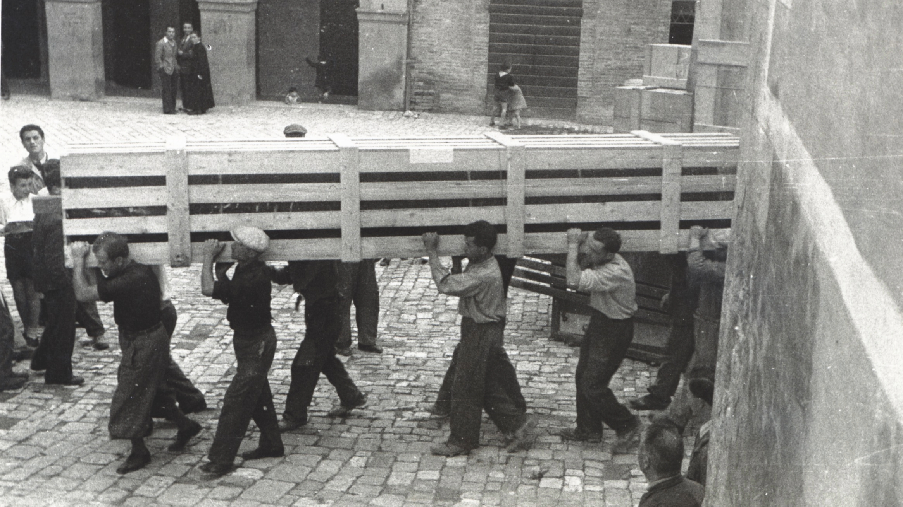
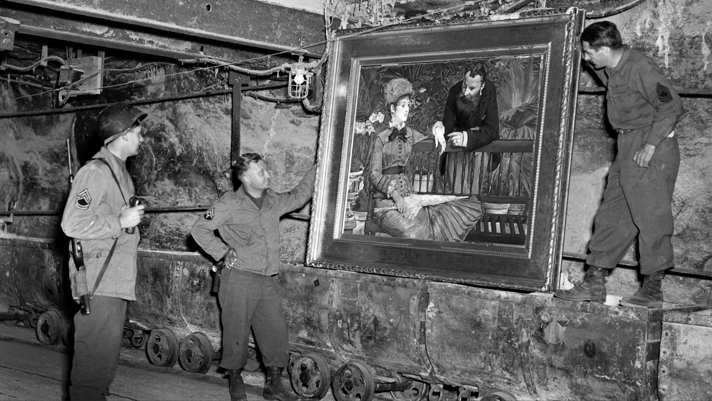

IL PROGETTO
Il progetto si sviluppa a partire dalla ricerca condotta per l’elaborato finale del mio percorso di laurea triennale. Lo studio aveva l’obiettivo di impostare un dizionario biografico e delle schede prosopografiche che potessero comporre la banca dati, attualmente mancante, dei protagonisti italiani della salvaguardia del patrimonio storico-artistico durante la Seconda guerra mondiale. Il modello di riferimento è stato la raccolta delle schede biografiche dei monuments men alleati, consultabile sul sito della Monuments men and women Foundation.
I monuments men erano un gruppo di civili, composto da professionisti nell’ambito della Storia dell’arte inviati nei paesi europei colpiti dal conflitto nel contesto del Monuments, Fine Arts and Archives Program, con lo scopo di individuare beni di particolare valore artistico e provvedere alla loro tutela. Questi ufficiali arrivarono in Italia nel 1943 dove, già all’indomani dell’entrata in guerra del paese, i funzionari del Governo stavano provvedendo alla tutela del patrimonio artistico di cui erano responsabili. In virtù del loro operato, questi soprintendenti, ispettori, direttori di musei e storici dell’arte possono essere considerati concettualmente monuments men e women, anche se i loro nomi non figurano nell’elenco ufficiale del MFAA.
Tra le tante figure coinvolte ne sono state selezionate sei: Palma Bucarelli, Noemi Gabrielli, Jole Bovio Marconi, Pasquale Rotondi, Armando Ottaviano Quintavalle e Fernanda Wittgens. La ricerca è stata svolta sulle pubblicazioni di studiosi che hanno ricostruito il loro operato attraverso lo spoglio delle fonti archivistiche e il risultato è stato la creazione di un dizionario biografico con schede prosopografiche e per ciascuna figura un breve racconto delle vicende e delle strategie di tutela messe in atto. Saranno proprio questi racconti a fornirci i dati necessari per rielaborare i contenuti dello studio attraverso le metodologie delle Digital Humanities e trasformare una ricerca testuale in un’applicazione web interattiva che permetta una fruizione dinamica dei dati. In questa sede, il progetto si presenta come un proof of concept: l’obiettivo non è la pubblicazione dell’applicazione definitiva, quanto la creazione di un framework di ricerca efficace.
Attraverso la modellazione dei dati e l’implementazione di un’interfaccia dinamica, può essere rivelata la complessità spaziale, temporale e relazionale delle operazioni dei monuments men e women italiani. La dimensione spaziale è rivelata tramite la geolocalizzazione dei luoghi; la dimensione temporale intreccia le vicende individuali dei protagonisti con gli eventi bellici e le attività degli enti pubblici; infine, la dimensione relazionale, attraverso l’analisi dei network, permette di ricostruirne le collaborazioni e le responsabilità.
ESPLORA LA RACCOLTA
Protagonisti
Esplora l'indice prosopografico delle figure chiave che operarono per la salvaguardia del patrimonio artistico italiano durante la Seconda guerra mondiale
Mappa interattiva
Attraverso la Mappa interattiva è possibile individuare i luoghi dove queste vicende si sono svolte.
Linea del tempo
La Linea del tempo permette di collocare le operazioni di salvataggio dei beni culturali nel contesto della Seconda Guerra Mondiale.
Network
Esplora la rete di collaborazioni che ha caratterizzato le operazioni di salvataggio del patrimonio artistico.